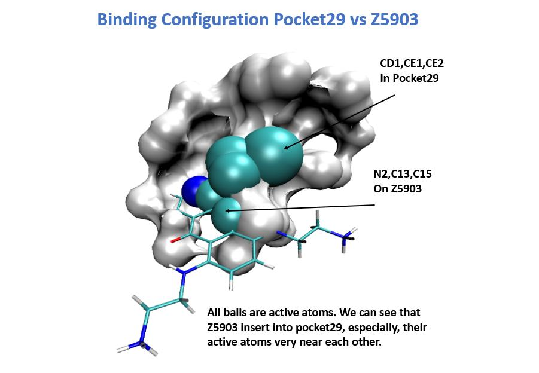

KRAS的量子力学计算
Kras蛋白是膜结合的GTP/GDP结合蛋白，相对分子质量为21,000，位于细胞膜内部。 Ras突变的比例：90％的胰腺癌，
50％的结肠癌，30％的肺癌，15％的卵巢癌，50％的甲状腺癌等。
KRAS的工作由美国国立癌症中心NCI向我们提出，MD安德森癌症中心进行了实验验证，我们执行量子力学计算。
我们以RCSB蛋白质数据库中的4DSP.pdb为Kras，量子力学计算结果表明Kras的口袋29是真正的活性口袋29，带有
活性残基Tyr32和活性原子CD1，CE1，CE2。此结果与印度IIT-Delhi Group的实验一致。NCI为我们提供了7种来自FDA批准
药物的配体：ZINC数据库ID（缩写）
z0417.pdb z0445.pdb z0820.pdb z1796.pdb z2770.pdb z5903.pdb z7879.pdb
将活性口袋29,活性原子CD1，CE1，CE2 和 NCI的7种药物输入3C-CNN程序, 结果是
名称 绑定亲和力
z0417 4.6009784
z0445 4.310649
z0820 4.329973
z1796 4.5986476
z2770 4.43543
z5903 4.787058
z7879 4.376234
可见 z5903药物具有最强的结合亲和力。 MD安德森癌症中心通过实验证实了这一结果。
